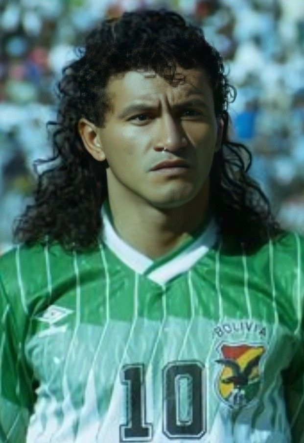

Mi opinion sobre este deportista de gran trascendencia que se destaco mucho en el futbol es un jugador que hizo llorar de alegria a muchos bolivianos. Sus goles producian en la gente los aplausos y por su juego se gano el apodo del diablo,sus jugadas enamorada a cualquier persona que amaba este deporte,este jugador demostraba liderazgo en la cancha,ver cada partido de este futbolista era como placentero para la vista del ser humano, ver como luchaba por cada balon perdido se notaba en su desempeño que entregaba todo por la camiseta de Bolivia. Verlo brillar no solo en Bolivia sino tambien en diferentes paises como Chile,Estados Unidos,Ecuador ,etc es algo hermoso que jamas podremos borrarlo de nuestra mente ademas se gano el respeto de muchos bolivianos.
Mi persona la verdad no tuvo el placer de verlo jugar en su momento aun no existia ,escuchar como la gente se expresa de el me hace pensar que ha sido un gran jugador que tuvo grandes compañeros que juntos lograron cumplir uno de lo grandes objetivos que tiene cualquier jugador que viste la casaca de la seleccion. Gracias a el y sus compañeros pudimos ver a nuestra selecion acudir a un mundial por meritos propios Concluyendo con esta opinion personal debo de mencionar que este personaje merece ser condecorado por la Conmebol ya que es un orgullo para muchos bolivianos.